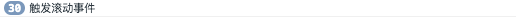
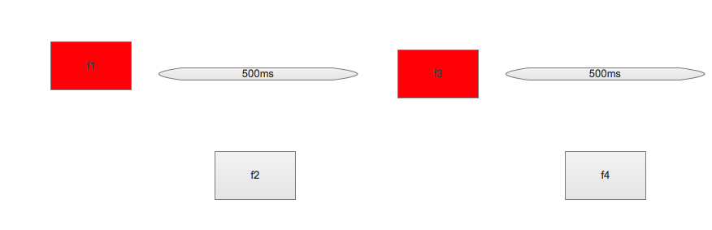
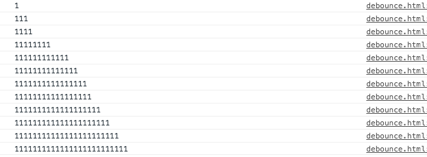
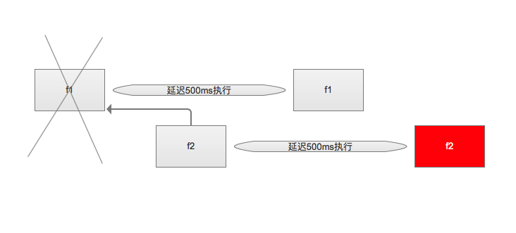

<!DOCTYPE html>
<html>
<head><meta name="generator" content="Hexo 3.8.0">
  <meta charset="utf-8">
  
  <title>函数的节流与防抖 | guowj</title>
  <meta name="viewport" content="width=device-width, initial-scale=1, maximum-scale=1">
  
  <meta name="keywords" content="js节流防抖">
  
  
  
  
  <meta name="description" content="&amp;nbsp;&amp;nbsp;&amp;nbsp;&amp;nbsp;&amp;nbsp;&amp;nbsp;当我们在做 WEB 客户端开发时，会经常使用resize、scroll、mousemove、input等在极短的时间内高频的调用回调函数。如果回调中又伴随着 DOM 操作，从而引发浏览器的重排与重绘，会造成浏览器非常大的计算压力，同时也会大量占用内存，性能差的浏览器可能就会直接假死，这样会大大降低用户体验。所以我们需要降低触">
<meta name="keywords" content="js,节流,防抖">
<meta property="og:type" content="article">
<meta property="og:title" content="函数的节流与防抖">
<meta property="og:url" content="https://gwjacqueline.github.io/函数的节流与防抖/index.html">
<meta property="og:site_name" content="guowj">
<meta property="og:description" content="&amp;nbsp;&amp;nbsp;&amp;nbsp;&amp;nbsp;&amp;nbsp;&amp;nbsp;当我们在做 WEB 客户端开发时，会经常使用resize、scroll、mousemove、input等在极短的时间内高频的调用回调函数。如果回调中又伴随着 DOM 操作，从而引发浏览器的重排与重绘，会造成浏览器非常大的计算压力，同时也会大量占用内存，性能差的浏览器可能就会直接假死，这样会大大降低用户体验。所以我们需要降低触">
<meta property="og:locale" content="zh-CN">
<meta property="og:image" content="https://gwjacqueline.github.io/images/throttle.png">
<meta property="og:image" content="https://gwjacqueline.github.io/images/throttleFlow.png">
<meta property="og:image" content="https://gwjacqueline.github.io/images/debounce.png">
<meta property="og:image" content="https://gwjacqueline.github.io/images/debounceFlow.png">
<meta property="og:updated_time" content="2019-06-16T06:51:06.000Z">
<meta name="twitter:card" content="summary">
<meta name="twitter:title" content="函数的节流与防抖">
<meta name="twitter:description" content="&amp;nbsp;&amp;nbsp;&amp;nbsp;&amp;nbsp;&amp;nbsp;&amp;nbsp;当我们在做 WEB 客户端开发时，会经常使用resize、scroll、mousemove、input等在极短的时间内高频的调用回调函数。如果回调中又伴随着 DOM 操作，从而引发浏览器的重排与重绘，会造成浏览器非常大的计算压力，同时也会大量占用内存，性能差的浏览器可能就会直接假死，这样会大大降低用户体验。所以我们需要降低触">
<meta name="twitter:image" content="https://gwjacqueline.github.io/images/throttle.png">
  
    <link rel="alternate" href="/atom.xml" title="guowj" type="application/atom+xml">
  

  

  <link rel="icon" href="/css/images/mylogo.png">
  <link rel="apple-touch-icon" href="/css/images/mylogo.png">
  
    <link href="//fonts.googleapis.com/css?family=Source+Code+Pro" rel="stylesheet" type="text/css">
  
  <link href="https://fonts.googleapis.com/css?family=Open+Sans|Montserrat:700" rel="stylesheet" type="text/css">
  <link href="https://fonts.googleapis.com/css?family=Roboto:400,300,300italic,400italic" rel="stylesheet" type="text/css">
  <link href="//netdna.bootstrapcdn.com/font-awesome/4.0.3/css/font-awesome.css" rel="stylesheet">
  <style type="text/css">
    @font-face{font-family:futura-pt; src:url("../css/fonts/FuturaPTBold.otf") format("woff");font-weight:500;font-style:normal;}
    @font-face{font-family:futura-pt-light; src:url("../css/fonts/FuturaPTBook.otf") format("woff");font-weight:lighter;font-style:normal;}
    @font-face{font-family:futura-pt-italic; src:url("../css/fonts/FuturaPTBookOblique.otf") format("woff");font-weight:400;font-style:italic;}
}

  </style>
  <link rel="stylesheet" href="/css/style.css">

  <script src="/js/jquery-3.1.1.min.js"></script>
  <script src="/js/bootstrap.js"></script>

  <!-- Bootstrap core CSS -->
  <link rel="stylesheet" href="/css/bootstrap.css">

  
    <link rel="stylesheet" href="/css/dialog.css">
  

  

  
    <link rel="stylesheet" href="/css/header-post.css">
  

  
  
  
    <link rel="stylesheet" href="/css/vdonate.css">
  

</head>
</html>


  <body data-spy="scroll" data-target="#toc" data-offset="50">


  
  <div id="container">
    <div id="wrap">
      
        <header>

    <div id="allheader" class="navbar navbar-default navbar-static-top" role="navigation">
        <div class="navbar-inner">
          
          <div class="container"> 
            <button type="button" class="navbar-toggle" data-toggle="collapse" data-target=".navbar-collapse">
              <span class="sr-only">Toggle navigation</span>
              <span class="icon-bar"></span>
              <span class="icon-bar"></span>
              <span class="icon-bar"></span>
            </button>

            
              <a class="brand" style="
                 margin-top: 0px;" href="#" data-toggle="modal" data-target="#myModal">
                  
              </a>
            
            
            <div class="navbar-collapse collapse">
              <ul class="hnav navbar-nav">
                
                  <li> <a class="main-nav-link" href="/">首页</a> </li>
                
                  <li> <a class="main-nav-link" href="/archives">归档</a> </li>
                
                  <li> <a class="main-nav-link" href="/categories">分类</a> </li>
                
                  <li> <a class="main-nav-link" href="/tags">标签</a> </li>
                
                  <li><div id="search-form-wrap">

    <form class="search-form">
        <input type="text" class="ins-search-input search-form-input" placeholder>
        <button type="submit" class="search-form-submit"></button>
    </form>
    <div class="ins-search">
    <div class="ins-search-mask"></div>
    <div class="ins-search-container">
        <div class="ins-input-wrapper">
            <input type="text" class="ins-search-input" placeholder="请输入关键词...">
            <span class="ins-close ins-selectable"><i class="fa fa-times-circle"></i></span>
        </div>
        <div class="ins-section-wrapper">
            <div class="ins-section-container"></div>
        </div>
    </div>
</div>
<script>
(function (window) {
    var INSIGHT_CONFIG = {
        TRANSLATION: {
            POSTS: '文章',
            PAGES: '页面',
            CATEGORIES: '分类',
            TAGS: '标签',
            UNTITLED: '(无标题)',
        },
        ROOT_URL: '/',
        CONTENT_URL: '/content.json',
    };
    window.INSIGHT_CONFIG = INSIGHT_CONFIG;
})(window);
</script>
<script src="/js/insight.js"></script>

</div></li>
            </ul></div>
          </div>
                
      </div>
    </div>

</header>


      
            
      <div id="content" class="outer">
        
          <section id="main" style="float:none;"><article id="post-函数的节流与防抖" style="width: 75%; float:left;" class="article article-type-post" itemscope itemprop="blogPost">
  <div id="articleInner" class="article-inner">
    
    
      <header class="article-header">
        
  
    <h1 class="thumb" itemprop="name">
      函数的节流与防抖
    </h1>
  

      </header>
    
    <div class="article-meta">
      
	<a href="/函数的节流与防抖/" class="article-date">
	  <time datetime="2019-06-15T02:27:43.000Z" itemprop="datePublished">2019-06-15</time>
	</a>

      
    <a class="article-category-link" href="/categories/js/">js</a>

      
	<a class="article-views">
	<span id="busuanzi_container_page_pv">
		阅读量<span id="busuanzi_value_page_pv"></span>
	</span>
	</a>

      

    </div>
    <div class="article-entry" itemprop="articleBody">
      
        <blockquote>
<p>&nbsp;&nbsp;&nbsp;&nbsp;&nbsp;&nbsp;当我们在做 WEB 客户端开发时，会经常使用<code>resize</code>、<code>scroll</code>、<code>mousemove</code>、<code>input</code>等在极短的时间内高频的调用回调函数。如果回调中又伴随着 DOM 操作，从而引发浏览器的重排与重绘，会造成浏览器非常大的计算压力，同时也会大量占用内存，性能差的浏览器可能就会直接假死，这样会大大降低用户体验。所以我们需要降低触发回调的频率。接下来我们通过函数节流和防抖看下如何降低回调的频率。</p>
</blockquote>
<a id="more"></a>
<h2 id="函数节流-throttle"><a href="#函数节流-throttle" class="headerlink" title="函数节流(throttle)"></a>函数节流(throttle)</h2><p>&nbsp;&nbsp;&nbsp;&nbsp;&nbsp;&nbsp;节流指的是在规定的单位时间内，只能有一次触发事件的回调函数执行，如果在规定的单位时间内某事件被触发多次，那么只能有一次生效。我们以监听<code>window</code>对象的<code>scroll</code>事件为例：</p>
<p>无节流时：</p>
<figure class="highlight plain"><table><tr><td class="gutter"><pre><span class="line">1</span><br><span class="line">2</span><br><span class="line">3</span><br><span class="line">4</span><br><span class="line">5</span><br><span class="line">6</span><br></pre></td><td class="code"><pre><span class="line"> $(window).on(</span><br><span class="line">    &quot;scroll&quot;,</span><br><span class="line">    function() &#123;</span><br><span class="line">        console.log(&quot;触发滚动事件&quot;);</span><br><span class="line">    &#125;</span><br><span class="line">);</span><br></pre></td></tr></table></figure>
<div align="center"><br>  <br></div>

<p>&nbsp;&nbsp;&nbsp;&nbsp;&nbsp;&nbsp;在没有加上函数节流之前，滚动的时候，浏览器会无时无刻地去触发滚动的方法，这样做事比较消耗性能的。在实际场景中，我们需要的是滚动时每隔一段时间去执行一次滚动的回调，而不是无时无刻的。所以我们需要加上函数节流，当触发滚动时，每隔一个单位时间才会去执行滚动的回调。</p>
<p>节流后：</p>
<figure class="highlight plain"><table><tr><td class="gutter"><pre><span class="line">1</span><br><span class="line">2</span><br><span class="line">3</span><br><span class="line">4</span><br><span class="line">5</span><br><span class="line">6</span><br><span class="line">7</span><br><span class="line">8</span><br><span class="line">9</span><br><span class="line">10</span><br><span class="line">11</span><br><span class="line">12</span><br><span class="line">13</span><br><span class="line">14</span><br><span class="line">15</span><br><span class="line">16</span><br><span class="line">17</span><br><span class="line">18</span><br><span class="line">19</span><br><span class="line">20</span><br><span class="line">21</span><br></pre></td><td class="code"><pre><span class="line">function throttle(callback, duration = 300) &#123;</span><br><span class="line">    //触发滚动方法时计算当前时间</span><br><span class="line">    let time = new Date().getTime();</span><br><span class="line">    return function() &#123;</span><br><span class="line">        //执行回调函数前再次计算当前时间</span><br><span class="line">        let nowTime = new Date().getTime();</span><br><span class="line">        //确保下次执行必须在300ms以后</span><br><span class="line">        if (nowTime - time &gt; duration) &#123;</span><br><span class="line">            //执行回调</span><br><span class="line">            callback();</span><br><span class="line">            //执行后需要把当前时间变成执行回调后的时间</span><br><span class="line">            time = nowTime;</span><br><span class="line">        &#125;</span><br><span class="line">    &#125;;</span><br><span class="line">&#125;</span><br><span class="line">$(window).on(</span><br><span class="line">    &quot;scroll&quot;,</span><br><span class="line">    throttle(function() &#123;</span><br><span class="line">    console.log(&quot;触发滚动事件&quot;);</span><br><span class="line">    &#125;, 500)</span><br><span class="line">);</span><br></pre></td></tr></table></figure>
<p>&nbsp;&nbsp;&nbsp;&nbsp;&nbsp;&nbsp;我们用一张图简单看下节流的具实现思路把。最开始会先执行 f1 函数，当 f2 又被触发后，先去判断它是否在单位时间 500ms 内，如果在，则不执行。接下来 f3 又被触发了，同理也是判断是否在单位时间 500ms 内，不在的话，则执行 f3。</p>
<div align="center"><br>  <br></div>

<h3 id="节流应用场景"><a href="#节流应用场景" class="headerlink" title="节流应用场景"></a>节流应用场景</h3><ul><br><br><li>短时间高频触发scroll、touchmove等事件</li><br><li>DOM元素拖拽</li><br></ul>

<h2 id="函数防抖-debounce"><a href="#函数防抖-debounce" class="headerlink" title="函数防抖(debounce)"></a>函数防抖(debounce)</h2><p>&nbsp;&nbsp;&nbsp;&nbsp;&nbsp;&nbsp;节流指的是在规定的单位时间内，只能有一次触发事件的回调函数执行，如果在同一单位时间内某事件被触发多次，那么只能有一次生效，我们用输入框的<code>input</code>事件为例来看看函数防抖。</p>
<figure class="highlight plain"><table><tr><td class="gutter"><pre><span class="line">1</span><br><span class="line">2</span><br><span class="line">3</span><br><span class="line">4</span><br><span class="line">5</span><br><span class="line">6</span><br></pre></td><td class="code"><pre><span class="line">$(&quot;#debounce&quot;).on(</span><br><span class="line">    &quot;input&quot;,</span><br><span class="line">    function() &#123;</span><br><span class="line">        console.log($(&quot;#debounce&quot;).val());</span><br><span class="line">    &#125;</span><br><span class="line">);</span><br></pre></td></tr></table></figure>
<div align="center"><br>  <br></div>

<p>&nbsp;&nbsp;&nbsp;&nbsp;&nbsp;&nbsp;我们可以看到，只要输入框值改变，就会触发回调。从资源上说，这是一种浪费的行为，而且在实际场景中，也是用户输入完整的字符后，才需要执行进一步的回调，接下来，我们用函数防抖优化下：</p>
<p>防抖后：</p>
<figure class="highlight plain"><table><tr><td class="gutter"><pre><span class="line">1</span><br><span class="line">2</span><br><span class="line">3</span><br><span class="line">4</span><br><span class="line">5</span><br><span class="line">6</span><br><span class="line">7</span><br><span class="line">8</span><br><span class="line">9</span><br><span class="line">10</span><br><span class="line">11</span><br><span class="line">12</span><br><span class="line">13</span><br><span class="line">14</span><br><span class="line">15</span><br><span class="line">16</span><br><span class="line">17</span><br><span class="line">18</span><br></pre></td><td class="code"><pre><span class="line">function debounce(callback, delay = 500) &#123;</span><br><span class="line">    //初设起始时间为null</span><br><span class="line">    var time = null;</span><br><span class="line">    return function() &#123;</span><br><span class="line">        //每次执行后都清空时间</span><br><span class="line">        clearTimeout(time);</span><br><span class="line">        time = setTimeout(() =&gt; &#123;</span><br><span class="line">            //延迟500ms后执行回调</span><br><span class="line">            callback();</span><br><span class="line">        &#125;, delay);</span><br><span class="line">    &#125;;</span><br><span class="line">&#125;</span><br><span class="line">$(&quot;#debounce&quot;).on(</span><br><span class="line">    &quot;input&quot;,</span><br><span class="line">    debounce(function() &#123;</span><br><span class="line">        console.log($(&quot;#debounce&quot;).val());</span><br><span class="line">    &#125;, 600)</span><br><span class="line">);</span><br></pre></td></tr></table></figure>
<p>&nbsp;&nbsp;&nbsp;&nbsp;&nbsp;&nbsp;我们还是用一张图来看看防抖的实现思路把。当第一次触发了 f1 后，我们先将它延迟 500ms 后执行。如果在 500ms 期间，又触发了一次，我们叫它 f2，则会将 500ms 清空，反正 f1 也还没有执行，则会重新延迟 500ms 后再执行 f2，依次类推。通过闭包保存一个标记用来存储<code>setTimeout</code>返回的值，当再次触发后，就会把前一个<code>setTimeout</code> clear 掉，然后再创建一个新的<code>setTimeout</code>。</p>
<div align="center"><br>  <br></div>

<h3 id="防抖应用场景"><a href="#防抖应用场景" class="headerlink" title="防抖应用场景"></a>防抖应用场景</h3><ul><br><li>输入框搜索联想</li><br><li>给按钮加函数防抖防止表单多次提交</li><br><li>对于输入框连续输入进行AJAX验证时，用函数防抖能有效减少请求次数</li><br><li>触发resize,不断的调整浏览器窗口大小</li><br></ul>

      
    </div>
    <footer class="article-footer">
      
        <div id="donation_div"></div>

<script src="/js/vdonate.js"></script>
<script>
var a = new Donate({
  title: '如果觉得我的文章对您有用，请随意打赏。您的支持将鼓励我继续创作!', // 可选参数，打赏标题
  btnText: '打赏支持', // 可选参数，打赏按钮文字
  el: document.getElementById('donation_div'),
  wechatImage: '../images/wx.jpeg',
  alipayImage: '../images/zfb.jpg'
});
</script>
      
      
      <div>
        <ul class="post-copyright">
          <li class="post-copyright-author">
          <strong>本文作者:  </strong>guowj
          </li>
          <li class="post-copyright-link">
          <strong>本文链接:  </strong>
          <a href="/函数的节流与防抖/" target="_blank" title="函数的节流与防抖">https://gwjacqueline.github.io/函数的节流与防抖/</a>
          </li>
          <li class="post-copyright-license">
            <strong>版权声明:   </strong>
            本博客所有文章除特别声明外，均采用 <a rel="license" href="https://creativecommons.org/licenses/by-nc-nd/4.0/" target="_blank" title="Attribution-NonCommercial-NoDerivatives 4.0 International (CC BY-NC-ND 4.0)">CC BY-NC-ND 4.0</a>
            许可协议。转载请注明出处
          </li>
         
        </ul>
<div>
</div></div>
      
      
        
	<div id="comment">
		<!-- 来必力City版安装代码 -->
		<div id="lv-container" data-id="city" data-uid="MTAyMC80MzU1OS8yMDA5OA==" ">
		<script type="text/javascript">
		   (function(d, s) {
		       var j, e = d.getElementsByTagName(s)[0];

		       if (typeof LivereTower === 'function') { return; }

		       j = d.createElement(s);
		       j.src = 'https://cdn-city.livere.com/js/embed.dist.js';
		       j.async = true;

		       e.parentNode.insertBefore(j, e);
		   })(document, 'script');
		</script>
		<noscript>为正常使用来必力评论功能请激活JavaScript</noscript>
		</div>
		<!-- City版安装代码已完成 -->
	</div>


      
      
        
  <ul class="article-tag-list"><li class="article-tag-list-item"><a class="article-tag-list-link" href="/tags/js/">js</a></li><li class="article-tag-list-item"><a class="article-tag-list-link" href="/tags/节流/">节流</a></li><li class="article-tag-list-item"><a class="article-tag-list-link" href="/tags/防抖/">防抖</a></li></ul>

      

    </footer>
  </div>
  
    
<nav id="article-nav">
  
    <a href="/vue-知识点总结/" id="article-nav-newer" class="article-nav-link-wrap">
      <strong class="article-nav-caption">上一篇</strong>
      <div class="article-nav-title">
        
          vue 知识点总结
        
      </div>
    </a>
  
  
    <a href="/异步加载js/" id="article-nav-older" class="article-nav-link-wrap">
      <strong class="article-nav-caption">下一篇</strong>
      <div class="article-nav-title">异步加载js</div>
    </a>
  
</nav>

  
</article>

<!-- Table of Contents -->

  <aside id="toc-sidebar">
    <div id="toc" class="toc-article">
    <strong class="toc-title">文章目录</strong>
    
        <ol class="nav"><li class="nav-item nav-level-2"><a class="nav-link" href="#函数节流-throttle"><span class="nav-number">1.</span> <span class="nav-text">函数节流(throttle)</span></a><ol class="nav-child"><li class="nav-item nav-level-3"><a class="nav-link" href="#节流应用场景"><span class="nav-number">1.1.</span> <span class="nav-text">节流应用场景</span></a></li></ol></li><li class="nav-item nav-level-2"><a class="nav-link" href="#函数防抖-debounce"><span class="nav-number">2.</span> <span class="nav-text">函数防抖(debounce)</span></a><ol class="nav-child"><li class="nav-item nav-level-3"><a class="nav-link" href="#防抖应用场景"><span class="nav-number">2.1.</span> <span class="nav-text">防抖应用场景</span></a></li></ol></li></ol>
    
    </div>
  </aside>

</section>
        
      </div>
      
      <footer id="footer">
  

  <div class="container">
      	<div class="row">
	      <!--<p> Powered by <a href="http://hexo.io/" target="_blank">Hexo</a> and <a href="https://github.com/iTimeTraveler/hexo-theme-hiker" target="_blank">Hexo-theme-hiker</a> </p>-->
	      <p id="copyRightEn">Copyright &copy;2019 guowj All Rights Reserved.</p>
	      
	      
    		<p class="busuanzi_uv">
				访客数 : <span id="busuanzi_value_site_uv"></span> |  
				访问量 : <span id="busuanzi_value_site_pv"></span>
		    </p>
  		   
		</div>

		
  </div>
</footer>


<!-- min height -->

<script>
    var wrapdiv = document.getElementById("wrap");
    var contentdiv = document.getElementById("content");
    var allheader = document.getElementById("allheader");

    wrapdiv.style.minHeight = document.body.offsetHeight + "px";
    if (allheader != null) {
      contentdiv.style.minHeight = document.body.offsetHeight - allheader.offsetHeight - document.getElementById("footer").offsetHeight + "px";
    } else {
      contentdiv.style.minHeight = document.body.offsetHeight - document.getElementById("footer").offsetHeight + "px";
    }
</script>
    </div>
    <!-- <nav id="mobile-nav">
  
    <a href="/" class="mobile-nav-link">Home</a>
  
    <a href="/archives" class="mobile-nav-link">Archives</a>
  
    <a href="/categories" class="mobile-nav-link">Categories</a>
  
    <a href="/tags" class="mobile-nav-link">Tags</a>
  
</nav> -->
    

<!-- mathjax config similar to math.stackexchange -->

<script type="text/x-mathjax-config">
  MathJax.Hub.Config({
    tex2jax: {
      inlineMath: [ ['$','$'], ["\\(","\\)"] ],
      processEscapes: true
    }
  });
</script>

<script type="text/x-mathjax-config">
    MathJax.Hub.Config({
      tex2jax: {
        skipTags: ['script', 'noscript', 'style', 'textarea', 'pre', 'code']
      }
    });
</script>

<script type="text/x-mathjax-config">
    MathJax.Hub.Queue(function() {
        var all = MathJax.Hub.getAllJax(), i;
        for(i=0; i < all.length; i += 1) {
            all[i].SourceElement().parentNode.className += ' has-jax';
        }
    });
</script>

<script type="text/javascript" src="https://cdnjs.cloudflare.com/ajax/libs/mathjax/2.7.1/MathJax.js?config=TeX-AMS-MML_HTMLorMML">
</script>


  <link rel="stylesheet" href="/fancybox/jquery.fancybox.css">
  <script src="/fancybox/jquery.fancybox.pack.js"></script>


<script src="/js/scripts.js"></script>


  <script src="/js/dialog.js"></script>


	<div style="display: none;">
    <script src="https://s95.cnzz.com/z_stat.php?id=1260716016&web_id=1260716016" language="JavaScript"></script>
  </div>


	<script async src="//busuanzi.ibruce.info/busuanzi/2.3/busuanzi.pure.mini.js">
	</script>


  </div>

  <div class="modal fade" id="myModal" tabindex="-1" role="dialog" aria-labelledby="myModalLabel" aria-hidden="true" style="display: none;">
  <div class="modal-dialog">
    <div class="modal-content">
      <div class="modal-header">
        <h2 class="modal-title" id="myModalLabel">设置</h2>
      </div>
      <hr style="margin-top:0px; margin-bottom:0px; width:80%; border-top: 3px solid #000;">
      <hr style="margin-top:2px; margin-bottom:0px; width:80%; border-top: 1px solid #000;">


      <div class="modal-body">
          <div style="margin:6px;">
            <a data-toggle="collapse" data-parent="#accordion" href="#collapseOne" onclick="javascript:setFontSize();" aria-expanded="true" aria-controls="collapseOne">
              正文字号大小
            </a>
          </div>
          <div id="collapseOne" class="panel-collapse collapse" role="tabpanel" aria-labelledby="headingOne">
          <div class="panel-body">
            您已调整页面字体大小
          </div>
        </div>
      


          <div style="margin:6px;">
            <a data-toggle="collapse" data-parent="#accordion" href="#collapseTwo" onclick="javascript:setBackground();" aria-expanded="true" aria-controls="collapseTwo">
              夜间护眼模式
            </a>
        </div>
          <div id="collapseTwo" class="panel-collapse collapse" role="tabpanel" aria-labelledby="headingTwo">
          <div class="panel-body">
            夜间模式已经开启，再次单击按钮即可关闭 
          </div>
        </div>

        <div>
            <a data-toggle="collapse" data-parent="#accordion" href="#collapseThree" aria-expanded="true" aria-controls="collapseThree">&nbsp;&nbsp;&nbsp;&nbsp;&nbsp;&nbsp;关 于&nbsp;&nbsp;&nbsp;&nbsp;&nbsp;&nbsp;</a>
        </div>
         <div id="collapseThree" class="panel-collapse collapse" role="tabpanel" aria-labelledby="headingThree">
          <div class="panel-body">
            guowj
          </div>
          <div class="panel-body">
            Copyright © 2019 guowj All Rights Reserved.
          </div>
        </div>
      </div>


      <hr style="margin-top:0px; margin-bottom:0px; width:80%; border-top: 1px solid #000;">
      <hr style="margin-top:2px; margin-bottom:0px; width:80%; border-top: 3px solid #000;">
      <div class="modal-footer">
        <button type="button" class="close" data-dismiss="modal" aria-label="Close"><span aria-hidden="true">×</span></button>
      </div>
    </div>
  </div>
</div>
  
  <a id="rocket" href="#top" class=""></a>
  <script type="text/javascript" src="/js/totop.js?v=1.0.0" async=""></script>
  
    <a id="menu-switch"><i class="fa fa-bars fa-lg"></i></a>
  
</body>
</html>